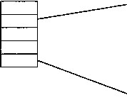
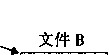
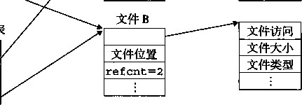

|
fd2 = Open ("baz.txt" |
,0_RD0NLY, |
0)； |
|
|
10 |
printf("fd2 = %d\n", |
fd2); |
|
|
n |
■ exit(0); |
||
|
12 |
> |
10.3 读和写文件
应用程序是通过分别调用read和write函数来执行输入和输出的。
#include <unistd.h>
ssize_t read(int fd, void *buf, size_t n);
返回：若成功则为读的字节数，若 EOF 则为 0, 若出错为一 1 。 ssize_t write(int fd, const void *buf, size_t n);
返回：若成功则为写的字节数，若出错则为一 1 。
read函数从描述符为fd的当前文件位置拷贝最多《个字节到存储器位置buf。返回值-1 表示一个错误，而返回值0表示EOF。否则，返回值表示的是实际传送的字节数量。
write 函数从存储器位置 buf 拷贝至多 n 个字节到描述符 fd 的当前文件位置。图 10-2 展 示了一个程序使用 read 和 write 调用一次一个字节地从标准输人拷贝到标准输出。
code/io/cpstdin. c
] #include "csapp.h"
2
int main(void)
char c:
8
9
10
while (Read (STDIN__FILEN0, &c, 1) != 0) Write(STDOUT.FILENO, &c, 1); exit(0);
code/io/cpstdin, c
图 10-2 —次一个字节地从标准输入拷贝到标准输出
通过调用lseek函数，应用程序能够显示地修改当前文件的位置，这部分内容不在我们的 讨论范围之内。
ssize—t 和 size—t 有些什么区别？
你可能已经注意到了，read函数有一个size一t的输入参数和一个ssize—t的返回值。 那么这两种类型之间有什么区别呢？ size—t被定义为unsigned int,而ssize_t (有符 号的大小）被定义为int。read函数返回一个有符号的大小，而不是一个无符号的大小，这是 因为出错时它必须返回-1。有趣的是，返回一个-1的可能性使得read的最大值减小了一半， 从4GB减小到了 2GB。
在某些情况下，read和write传送的字节比应用程序要求的要少。这些不足值（short count)不表示有错误。出现这种情况的原因如下：
•读时遇到EOF。假设我们准备读一个文件，该文件从当前文件位置开始只含有20多个字 节，而我们以50个字节的片进行读取。这样一来，下一个read返回的不足值为20,此 后的read将通过返回不足值0来发出EOF信号。
•从终端读文本行。如果打开文件是与终端相关联的（如键盘和显示器)，那么每个read函 数将一次传送一个文本行，返回的不足值等于文本行的大小。
•读和写网络套接字（socket)。如果打开的文件对应于网络套接字（见11.3.3节)，那么内 部缓冲约束和较长的网络延迟会引起read和write返回不足值。对Unix管道（pipe) 调用read和write时，也有可能出现不足值，这种进程间的通信机制不在我们讨论的范 围之内。
实际上，除了 EOF,你在读磁盘文件时，将不会遇到不足值，而且在写磁盘文件时，也不 会遇到不足值。然而，如果你想创建健壮的（可靠的）诸如Web服务器这样的网络应用，就必 须通过反复调用read和write处理不足值，直到所有需要的字节都传送完毕。
10.4 用 RIO 包健壮地读写
在这一节里，我们会讲述一个I/O包，称为RIO (Robust I/O,健壮的I/O)包，它会自动为 你处理上文中所述的不足值。在像网络程序这样容易出现不足值的应用中，RIO包提供了方便、 健壮和髙效的I/O。RIO提供了两类不同的函数：
•无缓冲的输入输出 函数。这些函数直接在存储器和文件之间传送数据，没有应用级缓冲。
它们对将二进制数据读写到网络和从网络读写二进制数据尤其有用。
•带缓冲的输入 函数。这些函数允许你高效地从文件中读取文本行和二进制数据，这些文 件的内容缓存在应用级缓冲区内，类似于为像printf这样的标准I/O函数提供的缓冲 区。与[109]中讲述的带缓冲的I/O例程不同，带缓冲的RIO输入函数是线程安全的（见
节)，它在同一个描述符上可以被交错地调用。例如，你可以从一个描述符中读一些 文本行，然后读取一些二进制数据，接着再多读取一些文本行。
我们讲述RIO例程有两个原因。第一，在接下来的两章中，我们开发的网络应用中使用了 它们；第二，通过学习这些例程的代码，你将从总体上Xt Unix I/O有更深入的了解。
RIO 的无缓冲的输入输出函数
通过调用rio_readn和riojriten函数，应用程序可以在存储器和文件之间直接传送数据。
#include "csapp.h"
ssize.t rio_readn(int fd, void *usrbuf, size_t n);
ssize_t rio_writen(int fd, void *usrbuf, size_t n);
返回：若成功则为传送的字节数，若 EOF 则为 0 (只对 rio_readn 而言），若出错则为一 1 。
rio_readn函数从描述符fd的当前文件位置最多传送《个字节到存储器位置usrbuf。 类似地，rio_writen函数从位置usrbuf传送《个字节到描述符fd。rio_readn函数在遇 到EOF时只含^返回一个不足值。rio_writen函数决不会返回不足值。对同一个描述符，可以 任意交错地调用rio—readn和rio—writen。
图 10-3 显示了 rio_readn•和 rio_writen 的代码。注意，如果 rio_readn 和 rio_ writen函数被一个从应用信号处理程序的返回中断，那么每个函数都会手动地重启read或 write。为了尽可能有较好的可移植性，我们允许被中断的系统调用，且在必要时重启它们。 (参见8.5.4节中关于被中断的系统调用的讨论。）
RIO 的带缓冲的输入函数
一 个文本 行就是一个由换行符结尾的ASCII码字符序列。在Unix系统中，换行符（‘\n’） 与ASCII码换行符（LF)相同，数字值为0x0a。假设我们要编写一个程序来计算文本文件中文 本行的数量该如何来实现呢？ 一种方法就是用read函数来一次一个字节地从文件传送到用户存 储器，检査每个字节来査找换行符。这个方法的缺点是效率不是很高，每读取文件中的一个字节 都要求陷入内核。
一种更好的方法是调用一个包装函数（rio一readlineb),它从一个内部读 缓冲区 拷贝一 个文本行，当缓冲区变空时，会自动地调用read重新填满缓冲区。对于既包含文本行也包含二 进制数据的文件（例如11.5.3节中描述的HTTP响应)，我们也提供了一个rio_readn带缓冲 区的版本，叫做rio一readnb,它从和rio一readlineb—样的读缓冲区中传送原始 字节。
#include "csapp.h" |
|
void rio_readinitb (rio_t *rp, int fd); |
|
返回：无。 |
|
ssize_t rio_readlineb(rio_t *rp, void *usrbuf, size 編 t maxlen); |
|
ssize_t rio_readnb(rio_t *rp, void *usrbuf i size^t n); |
|
返回：若成功则为读的字节数 , 若 EOF 则为 0 ， |
若出错则为一 1 。 |
■ code/src/csapp. c
ssize.t rio_readn(int fd, void *usrbuf,
{
size_t nleft = n; ssize_t nread; char *bufp = usrbuf;
while (nleft > 0) {
if ((nni = read(fd, bufp, nleft)) < 0) {
y
else if (nread = break; nleft -= nread; bufp += nread;
>
return (n - nleft);
Interrupted by sig handler return */ and call read() again */
code/src/csapp. c
code/src/csapp. c
ssize_t rio_writen(int fd, void *usrbuf, size_t n)
size_t nleft = n; ssize_t nwritten; char *bufp = usrbuf;
while (nleft > 0) {
if ((nwritten = write(fd, bufp, nleft)) <= 0) {
Interrupted by sig handler return */ and call write () again */
errno set by v;i 丨 」水 /
4
5
6
7
9
10
11
12
13
14
15
16
17
\9 20
if (errno == EINTR) /* nread = 0;
else
return -1;
h
/* errno set by read.() */
0)
/水 EOF */
卜 Return >= 0 */
if (errno == EINTR) /* nwritten = 0; /*
else
return -1; "
>
nleft -= nwritten; bufp += nwritten;
>
return n;
code/src/csapp.c
图 10-3 rio_readn 和 rio_writen 函数
每打开一个描述符都会调用一次rio_readinitb函数。它将描述符fd和地址rp处的一 个类型为rio_t的读缓冲区联系起来。
rio_readinitb函数从文件rp读出一个文本行（包括结尾的换行符），将它拷贝到存 储器位置usrbuf,并且用空（零）字符来结束这个文本行。rio—readlineb函数最多读 maxlen-1个字节，余下的一个字符留给结尾的空字符。超过maxlen-1字节的文本行被截 断，并用一个空字符结束。
rio_readnb函数从文件rp最多读n个字节到存储器位置usrbuf。对同一描述符，对 rio_readlineb和rio_readnb的调用可以任意交叉进行。然而，对这些带缓冲的函数的调
用却不应和无缓冲的rio__readn函数交叉使用。
在本书剩下的部分中^给出大量的RIO函数的示例。图10-4展示了如何使用RIO函数来- 次一行地从标准输入拷贝一个文本文件到标准输出。
code/io/cpfilex
#include "csapp.h"
int main(int argc, char **argv)
{
int n;
rio_t rio;
char buf[MAXLINE];
Rio_readinitb(&rio, STDIN_FILEN0); while((n = Rio_readlineb(&rio, buf, MAXLINE)) != 0) Rio.writen(STD0UT_FILEN0, buf, n);
12
code/io/cpfile.c
图10-4从标准输入拷贝一个文本文件到标准输出
图10-5展示了一个读缓冲区的格式，以及初始化它的rio一readinitb函数的代码。 rio_readinitb函数创建了一个空的读缓冲区，并且将一个打开^文件描述符和这个缓冲区 联系i来。
code/include/csapp. h
#define RICLBUFSIZE 8192
typedef struct {
、 int rio_fd;
int rio_cnt ;
char *rio_bufptr;
char rio_buf[RICLBUFSIZE];
? > rio_t;
/* Descriptor for this internal buf */ /* Unread bytes in internal buf 伞 /
/* Mext, unread byte in internal buf */ /* Internai buffer */
code/include/csapp. h
, code/src/csapp. c
void rio_readinitb(rio_t *rp, int fd)
rp->rio_fd = fd; rp->rio_cnt = 0; rp->rio_bufptr =
rp->rio_buf;
code/src/csapp.c
图10-5 —个类型为rio_t的读缓冲区和初始化它的rio_readinitb函数
RIO读程序的核心是如图10-6所示的rio_read函数。rio一read函数是Unix read函数 的带缓冲的版本。当调用rio_read要求读n个字节时，读缓冲区内有rp->rio一cnt个未读 字节。如果缓冲区为空，那么会通过调用read再填满它。这个read调用收到一个不足值并不 是错误，只不过读缓冲区是填充了一部分。一旦缓冲区非空，rio一read就从读缓冲区拷贝n 和rp->rio_cnt中较小值个字节到用户缓冲区，并返回拷贝的字节数。
code/src/csapp. c
static ssize.t rio_read(rio_t *rp, char *usrbuf, size_t n)
{
int cnt;
while (rp->rio_cnt <= 0) { /* Refill If buf is empty */
7
9
'1 (3 1 1 12 13
rp->rio_cnt = read(rp->rio_fd, rp->rio_buf, sizeof(rp->rio_buf)); if (rp->rio_cnt < 0) {
if (errno != EINTR) /* Interrupted by sig handler return *■/ return -1;
>
else if (rp->rio_cnt == 0) A EOF */ return 0;
else
15
'17 18
19
21 22
23
24
25
rp->rio_bufptr = rp->rio_buf; /* Reset buffer ptr */
>
/* Copy min(n, rp->rio„cnt) bytes from internal buf to user buf */ cnt = n;
if (rp->rio_cnt < n) cnt = rp->rio_cnt; memcpy(usrbuf, rp->rio_bufptr, cnt); rp->rio_bufptr += cnt; rp->rio_cnt -= cnt; return cnt;
>
code/src/csapp. c
图10-6 内部的rio_read函数
对于一个应用程序，rio一read函数和Unix read函数有同样的语义。在出错时，它返回 值-1，并且适当地设置errno。在EOF时，它返回值0。如果要求的字节数超过了读缓冲区 内未读的字节的数量，它会返回一个不足值。两个函数的相似性使得很容易通过用rio—read 代替read来创建不同类型的带缓冲的读函数。例如，用rio—read代替read,图10-7中的 rio_readnb函数和rio—readn有相同的结构。相似地，图10-7中的rio__readlineb程序 最多调用maxlen-1次rio_read。每次调用都从读缓冲区返回一个字节，&后检査这个字节 是否是结尾的换行符。
RIO 包的起源
RIO 函数的灵感来自于 W.Richard Stevens 在他的经典网络编程作品 [109 ]中描述的 readline、readn 和 writen 函数。 rio 一 readn 和 rio—writen 函数与 Stevens 的 readn 和 writen 函数是一样的。然而， Stevens 的 readline 函数有一些局限性在 RIO 中得到了 糾正。第一，因为 readline 是带缓冲的，而 readn 不带，所以这两个函数不能在同一描述 符上一起使用。第二，因为它使用一 ^ static 缓冲区， Stevens 的 readline 兩数不是线程 安全的，这就要求 Stevens 引入一个不同的线程安全的版本，称为 readline—r 。我们已经在 rio 一 readlineb 和 rio 一 readnb 兩数中修改了这两个缺陷，使得这两个 1 ¾数是相互兼容和 线程安全的。
|
3 |
int n, |
rc; |
||||
|
A c |
char c. |
,*bufp = usrbuf ; |
||||
|
J> 6 |
for (n |
= 1; n < maxlen; n++) { |
||||
|
7 |
if |
((rc = rio_read(rp, &c, |
||||
|
8 |
*bufp++ = c; |
|||||
|
9 |
if (c 二二 'W) |
|||||
|
10 |
break; |
|||||
|
11 |
} else if (rc == 0) { |
|||||
|
12 |
if (n == 1) |
|||||
|
13 |
return 0; |
/* |
EOF, no data read */ |
|||
|
14 |
else |
|||||
|
15 |
break; |
/* |
EOF ， some data was read */ |
|||
|
16 |
} |
else |
||||
|
17 |
return -1; |
/* |
Error */ |
|||
|
18 |
} |
|||||
|
19 |
♦bufp |
=o ； |
||||
|
20 |
return |
n; |
||||
code/src/csapp.c
ssize_t rio^readlineb(rio_t *rp, void *usrbuf, size_t maxlen)
code/src/csapp. c . code/src/csapp. c
ssize_t rio_readnb(rio_t *rp, void *usrbuf, size_t n)
size_t nleft = n; ssize_t nread; char *bufp = usrbuf;
while (nleft > 0) {
if ((nread = rio 一 read(rp, bufp, nleft)) < 0) {
if (errno == EINTR) /氺 Interrupted by sig handler return 氺 / nread = 0; /* Call readO again */
else
return -1;
>
else if (nread == 0) break; nleft -= nread; bufp += nread;
>
return
/* errno set by read() */ /* EOF */
/* Return >= 0 */
. code/src/csapp. c
图 10-7 rio readlineb 和 rio_readnb 函数
10.5 读取文件元数据
应用程序能够通过调用stat和f stat函数，检索到关于文件的信息（有时也称为文件的 元数据 （metadata))。
#include <unistd.h> |
|
#include <sys/stat.h> |
|
int stat(const char *filename, struct stat *buf); |
|
int fstat(int fd, struct stat *buf); |
|
返回：若成功则为 0, 若出错则为一 1 。 |
stat函数以一个文件名作为输入，并填写如图10-8所示的一个stat数据结构中的各个成 员。fstat函数是相似的，只不过是以文件描述符而不是文件名作为输入。当我们在11.5节中 讨论Web服务器时，会需要stat数据结构中的st一mode和st一size成员，其他成员则不在 我们的讨论范围之内。
/* Metadata returned by the
|
struct stat { |
|
|
dev_t |
st_dev; |
|
ino_t |
st_ino; |
|
mode_t |
st.mode; |
|
nlink_t |
st_nlink |
|
uid_t |
st_uid; |
|
gid_t |
st_gid; |
|
dev_t |
st_rdev; |
|
off_t |
st_size; |
statbuf.h (included by sys/stat.h)
stat and fstat functions */
h
h
h
h
/*
/*
h
Device */ inode */
Protection and file type */ Number of hard links */
User ID of owner 氺 /
Group ID of owner */
Device type (if inode device) */ Total size, in bytes */
|
unsigned |
long st_blksize; |
/* |
|
unsigned |
long st^blocks; |
/* |
|
time_t |
st_atime; |
/* |
|
time_t |
st_mtime; |
/* |
|
time_t |
st_ctime; |
h |
Blocksize for filesystem I/O 氺 / Number of blocks allocated */ Time of last access */
Time of last modification */ Time of last change */
statbuf.h (included by sys/stat.h)
图10-8 stat数据结构
st一size成员包含了文件的字节数大小。st_mode成员则编码了文件访问许可位（见图
1) i文件 类型。 Unix识别大量不同的文件类^ 普通文 件包括某种类型的二进制或文本数 据。 对于内核而言，文本文件和二进制文件毫无区别。 目录文件 包含关于其他文件的信息。 套接 字是一种用来通过网络与其他进程通信的文件（见11.4节)。
Unix提供的宏指令根据st_mode成员来确定文件的类型。图10-9列出了这些宏的一个 子集。
宏指令 |
描述 |
S_ISREG0 |
这是一个普通文件吗？ |
SJSDIR0 |
这是一个目录文件吗？ |
SJSSOCKQ |
这是一个网络套接字吗？ |
图10-9根据st_mode位确定文件类型的宏指令。在sys/stat.h中定义
code/io/statcheck. c
#include "csapp.h"
2
3 int main (int argc, char **argv)
|
5 |
struct stat stat; |
|
|
6 7 |
char *type, *readok ; |
|
|
/ 8 |
Stat(argv [1], festat); |
|
|
9 |
if (S_ISREG(stat.st.mode)) /* Determine |
file type |
|
10 |
type = "regular" ; |
|
|
11 |
else if (S_ISDIR(stat .st.mode)) |
|
|
12 |
type = "directory" ; |
|
|
13 |
else |
|
|
hi |
type - "other"; |
|
|
15 |
if ((stat.st_mode & S_IRUSR) ) /* Check read |
access */ |
|
16 |
readok = "yes"; |
|
|
17 |
else |
|
|
18 |
readok = "no"; |
printf("type: %s, read: %s\n", type, readok);
exit(0);
: code/io/statcheck. c
图 10-10 查询和处理一个文件的 stjnode 位
10.6 共享文件
可以用许多不同的方式来共享Unix文件。除非你很清楚内核是如何表示打开的文件，否则 文件共享的概念相当难懂。内核用三个相关的数据结构来表示打开的文件：
•描述符表 （descriptor table )。 每个进程都有它独立的描述符表，它的表项是由进程打开的 文件描述符来索引的。每个打开的描述符表项指向文 件表中 的一个表项。
•文件表 （file table)。打开文件的集合是由一张文件表来表示的，所有的进程共享这张表。 每个文件表的表项组成（针对我们的目的）包括有当前的文件位置、 引用计数 （reference count)(即当前指向该表项的描述符表项数)，以及一个指向v-node表中对应表项的指针。 关闭一个描述符会减少相应的文件表表项中的引用计数。内核不会删除这个文件表表项, 直到它的引用计数为零。
•v-node表（v-nodetable)。同文件表一样，所有的进程共享这张v-node表。每个表项包含 stat结构中的大多数信息，包括st一mode和st_size成员。
图10-11展示了一个示例，其中描述符一 i 和4通过f同的打开文件表表项来引用两个不同的 文件。这是一种典型的情况，没有井享文件，并且每个描述符对应一个不同的文件。
如图10-12所示，多个描述符也可以通过不同的文件表表项来引用同一个文件。例如，如果 以同一个filename调用open函数两次，就会发生这种情况。关键思想是每个描述符都有它自 己的文件位置，所以对不同描述符的读操作可以从文件的不同位置获取数据。
我们也能理解父子进程是如何共享文件的。假设在调用fork之前，父进程有如图10-11所 示的打开文件。然后，图10-13展示了调用fork后的情况。子进程有一个父进程描述符表的副 本。父子进程共享相同的打开文件表集合，因此共享相同的文件位置。一个很重要的结果就是， 在内核删除相应文件表表项之前，父子进程必须都关闭了它们的描述符。
打开文件表 (所有进程共享）
描述符表 (每个进程一张表)
0 12 3 4 fdfdfdfdfd
stdin
stdout
stderr
文件位置 refcnt=l
文件A
v-node 表 (所有进程共享）
► |
|
文件访问 |
文件位置 |
文件大小 |
|
refcnt=l |
文件类型 |
|
文件B
文件访问 文件大小 文件类型
图10-11典型的打开文件的内核数据结构。在这个示例中，两个描述符引用不同的文件。没有共享
描述符表 (每个进程一张表）
打开文件表 (所有进程共享） 文件A
0 12 3 4 fdfdfdfdfd


v-node 表 (所有进程共享）
文件访问 |
||
文件位置 |
/ |
文件大小 |
refcnt=l |
/ |
文件类型 |
/ |
文件位置 refcnt=l
图10-12文件共享。这个例子展示了两个描述符通过两个打开文件表表项共享同一个磁盘文件
打开文件表 v-node 表
的寻

M 还付表 （所有进程共享） （所有进程共享）
父进程的表 文件A
|
fdO |
——— |
文件访问 |
|||
|
fdl fd 2 |
文件位置 |
文件大小 |
|||
|
fd3 |
/ |
refcnt =2 |
文件类型 |
||
|
fd4 |
\ / |
： |
0 12 3 4 ifdfdfdfdfd